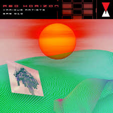
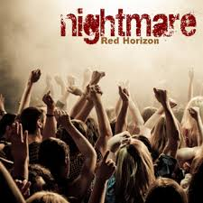
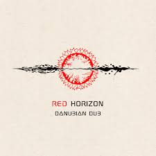

Альбомы

Первый рассвет (2019)
Дебютный EP из 5 песен. Записан на студии "Добролет".
Треки: "Рассвет", "Ветер", "Город", "Ночь", "Прощай"

Время выбрало нас (2021)
Первый полноформатный альбом. Вошел в топ-20 лучших рок-альбомов года по версии Нашего радио.
Треки: "Время", "Выбирай", "Стена", "Дождь", "Полет", "Снова"

Красный горизонт (2023)
Последний альбом. Песня "Горизонт" стала саундтреком к сериалу "Море".
Треки: "Горизонт", "Пепел", "Новый день", "Тени", "Свобода", "Дыши"